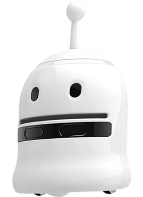
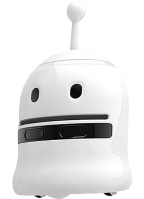

💻 Create
🖥️ 386, 486 시절 페르시안 왕자와 고인돌 게임을 하며
컴퓨터의 매력에 눈을 떴습니다.
👩💻 중학생 시절, 이미 컴활과 워드를 섭렵했고
대학 졸업 후엔 C++이 너무 싫어
전혀 다른 삶을 살기도 했습니다.
😅 하지만 역시 익숙함이라는 단어는 무섭습니다.
결국 코딩을 가르치는 선생님이 되었어요.
🕰️ 20년 전, 밤을 새워 영타로 HTML 태그를 하나하나 입력하며
홈페이지를 만들던 시절이 떠오릅니다.
⚡ 지금은 단 몇 시간 만에 이렇게 멋진 웹페이지를 만들 수 있다니,
정말 놀랍고 즐겁습니다!
🤖 아두이노, 🤖 드론, 🦾 로봇, ✏️ 3D펜까지
자유자재로 다루며,
초·중·고 학생부터 성인까지 맞춤형으로
재미있게 코딩을 가르치는
🌸 감성 넘치는 코딩 교육자 초코 🍫입니다. 😊
 
